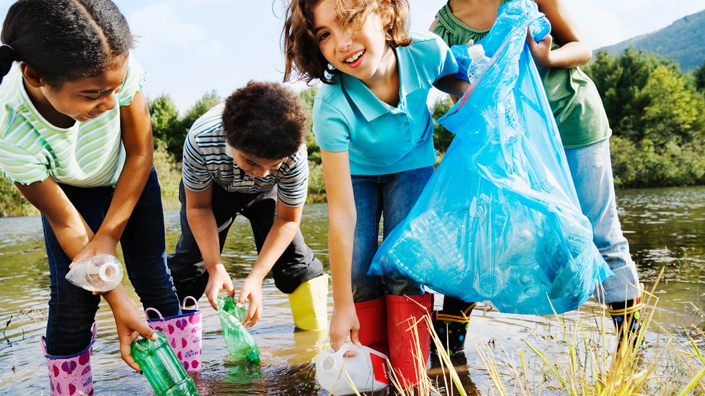

World Environment Day
World Environment Day is celebrated annually on 5th June and it aims at encouraging awareness and action for the protection of the environment. UN encourages and puts emphasis on the conversation of the environment and natural resources in order to preserve future generations.


World Forest Day
World forest day is annually celebrated on 21st March and the UN encourages nations and marks the day by planting trees and encouraging the nations to avoid deforestation by all costs.

Marine Life
Marine life, sea life, or ocean life is the plants, animals and other organisms that live in the salt water of seas or oceans, or the brackish water of coastal estuaries. At a fundamental level, marine life affects the nature of the planet. Marine organisms, mostly microorganisms, produce oxygen and sequester carbon.